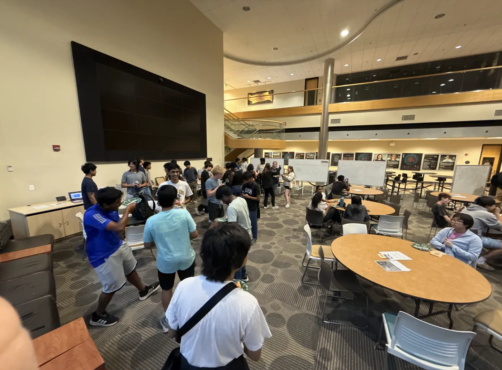

Mentorship
Mentorship is a series of events that brings Purdue CS/DS students together across years. Underclassmen get help finding their footing, and upperclassmen get a clearer look at what comes after Purdue. There are no assigned groups, and mentors sign up one event at a time.
How it works
Everything is event based, so the commitment is low for mentors and mentees alike. Expect plenty of panel-style events. Each event focuses on one of two groups:
- Underclassmen: opportunities you might not know about, so you can find your footing at Purdue. Think SURF, DUIRI, AI Forge, The Data Mine, competitive programming, internships from upperclassmen, research from grad students, and other Purdue-specific opportunities.
- Upperclassmen and alumni: research, and a clearer look at life after Purdue.
In the fall, the first half of events is aimed at freshmen and the second half at sophomores. The spring turns toward research, then upperclassmen and alumni.
For Mentees
Are you an underclassman looking for guidance? Apply to join the program and find out about each event as it comes up.
Apply as a MenteeFor Mentors
Want to share what you have learned? Fill out the mentor interest form, then sign up for the events you want to help with.
Apply as a Mentor
Mentorship callout 1
Timeline
| When | Milestone |
|---|---|
| Late Aug | Open mentee applications and mentor sign-ups |
| Mid Sep | Mentorship Event #1: Freshman year bucket list |
| Oct | Mentorship Event #2: Getting started with LeetCode |
| Nov | Mentorship Event #3: Hackathon to make the most useless project (remove the fear of failure) |
| Late Jan / Early Feb | Mentorship Event #4: MS research showcase |
| Mar | Mentorship Event #5: Life after Purdue, with alumni |
| Apr | Bucket list wrap-up, with prizes if you finished everything on your list |